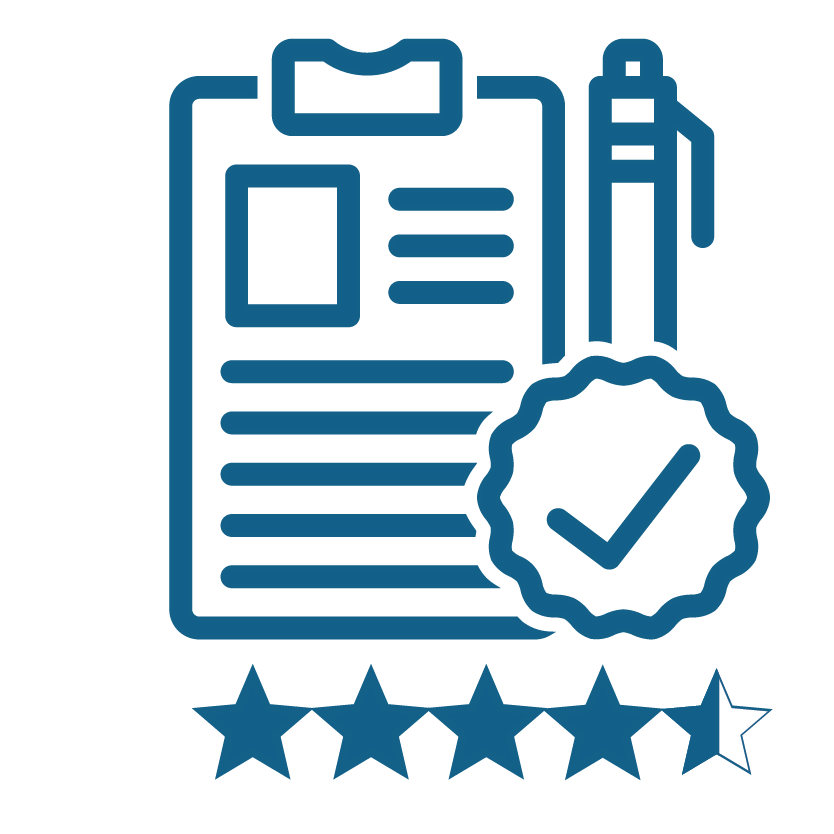

Digital Learning Delivery

SCROLL
Key Metrics – YTD

*Source data: Intrepid course completion rate.
We post a survey in most of our collaborative learning courses asking learners if they would be
interested in becoming virtual facilitators. We have received over 500 responses till date.
We have witnessed volunteers across various levels in the organization, participating in
this initiative where leaders teach leaders. We have catalyst graduates who are joining to give
back in developing others, we also have managing directors to new career rotational
facilitators volunteering for the same. We also have support from businesses like CASC NA
encouraging leaders to facilitate courses like Unconscious Bias and recognizing their efforts
as lead trainers.
We have people seeking the opportunity and recommending their peers as well.
Learning Courses – Statistics
Quarterly Data FY 20–2021
| Course Name | Net Promoter Score | Completion % | Satisfaction Rating (out of 5) |
|---|---|---|---|
| Innovation Fundamentals Masterclass | 72.5% | 90% | 4.4 |
| Strategic Pricing Bootcamp | 69.6% | 89% | 4.5 |
| Unconscious Bias (all languages combined) | 65.9% | 70% | 4.6 |
| Supply & Inventory Planning | 35.5% | 77% | 4.4 |
| Business Consulting - Influencing Others (all languages) | 45.6% | 63% | 4.7 |
| Busines Consulting – Business Acumen | 48.7% | 66% | 4.6 |
| Business Consulting – Strategic Partnering | 39.5% | 59% | 4.6 |
| Understanding Cargill Sales Framework (all languages) | 49.3% | 54% | 4.7 |
| Selling Skills 1-4 (all languages)* | SS1-51.7% SS2-6.9% SS3-60.0% SS4-65.8% |
52% | 4.3 |
| Demand Planning | 45.5% | 51% | 4.4 |

Net Promoter Score - 57%
Completion Percentage - 67%
Satisfaction Rating - 4.5
Testimonials
Voice of the Facilitator
Voice of the Learner
We are Proud of:
Vivian | Digital Delivery Specialist
What I am very proud of is to support our virtual facilitators in UCSF by creating a trusting,
easy, happy atmosphere, in which we shared best practice, keep inspiring each other. Some
facilitators said This is the best team I experienced so far. Weekly interaction, Sharing best
practices and open to learn from each other impressed me a lot.
Projects
- CI Translation
- Collaborative learning Course Translations
- Marketed Mandarin courses
Sheilla | Digital Delivery Specialist
I am proud of contribute in Marketing space promoting My Learning benefits
and Digital Learning
strategy to people, specially in Latam where I´ve conducted 13 sessions in Portuguese and 12
sessions in Spanish.
From these sessions, people started to be interested and reach out us to deep dive and looking
for
contents that fits with their development. Also, people asked us about extra sessions to
understand
how can they create their own pathways to offer to teams. It was great.
Summary: Contribute with people development following our Digital strategy was an amazing challenge this entire year. We can see Latam achieve 78.3% (goal:75%) to adoption and 15.1% (15%) to active learners goals. So happy.
Summary: Contribute with people development following our Digital strategy was an amazing challenge this entire year. We can see Latam achieve 78.3% (goal:75%) to adoption and 15.1% (15%) to active learners goals. So happy.
Projects
- Innovation Fundamentals Masterclass
- Collaborated with marketing team
- Collaborative learning Course Translations
- Marketing Academy Fundamentals project
Linda | Digital Delivery Specialist
Bringing my Digital Delivery expertise to the new Strategic Pricing Bootcamp digital learning
course, leveraging my delivery experience to help the core team evolve the course from an
initial
pilot to the success that it is today.
Projects
- Supply & Inventory Planning and Demand Planning
- Skills Based Organization work
- Strategic Pricing Bootcamp
- Strategic HR course
Processes Focused on:
- Communications
- Onboarding Facilitators
- Post Implementation Review
- Quarterly Check Ins with DLLs
- Marketing Automation Pilot
- Gathering Learner requirement proactively
- Data collected through surveys for course requirement for initiating targeted communication
- Scheduling and resource management of courses
- Train the Trainer initiative for Cross training and adding courses as per demand (UB, Influencing Others)